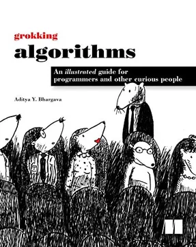
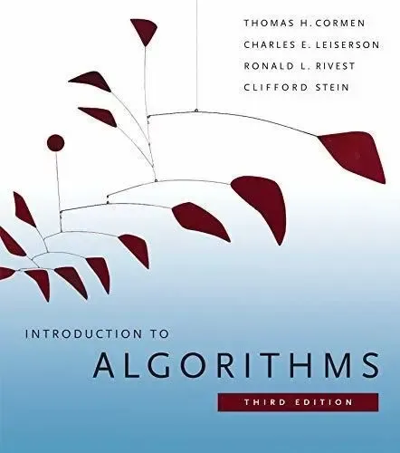
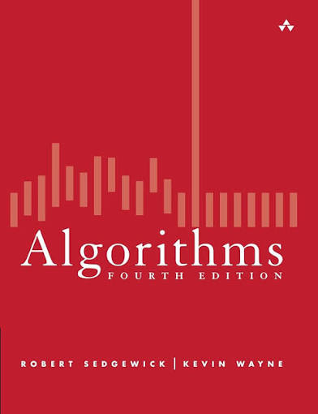
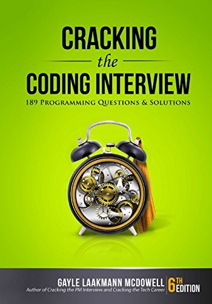

VisuAlgo.net
Animaciones interactivas paso a paso para modelar el comportamiento de estructuras de datos y algoritmos en memoria.
Herramientas recomendadas para modelar mentalmente la memoria RAM y el movimiento de punteros:
Animaciones interactivas paso a paso para modelar el comportamiento de estructuras de datos y algoritmos en memoria.
Plataforma de código abierto que muestra la línea exacta de ejecución de código mientras dibuja los nodos en memoria.
Entrena con problemas reales clasificados por dificultad en entornos de evaluación automatizada:
La plataforma estándar de la industria tecnológica para preparar entrevistas técnicas en Google, Meta, Amazon y Microsoft.
Desafíos graduados con insignias por lenguaje (Python, C++, Java) y competencias de programación competitiva.
Evaluaciones técnicas integrales con puntaje GCA utilizado por reclutadores internacionales.
Resuelve desafíos comunitarios graduados en niveles Kyu y Dan para entrenar tu lógica algorítmica.
Literatura técnica esencial para profundizar en la ciencia de los algoritmos:

Autor: Aditya Bhargava
Guía ilustrada y amigable con analogías visuales para principiantes.

Autores: Cormen, Leiserson, Rivest, Stein
El texto de referencia universitario estándar del MIT con rigor matemático.

Autores: Sedgewick & Wayne
Enfoque analítico riguroso con implementaciones y mediciones de rendimiento.

Autora: Gayle McDowell
189 problemas de algoritmos resueltos y estrategias para resolver entrevistas técnicas.
Fórmulas asintóticas, complejidades de estructuras de datos y algoritmos esenciales en una sola vista lista para imprimir o descargar:
| Estructura / Algoritmo | Acceso / Mejor | Búsqueda / Promedio | Inserción / Peor | Espacio Auxiliar |
|---|---|---|---|---|
| Arreglo Contiguo (Array) | O(1) |
O(n) |
O(n) |
O(1) |
| Lista Enlazada (Linked List) | O(n) |
O(n) |
O(1) al frente |
O(1) |
| Tabla Hash (Hash Map) | N/A |
O(1) |
O(1) prom / O(n) |
O(n) |
| Árbol BST Balanceado | O(log n) |
O(log n) |
O(log n) |
O(n) |
| QuickSort | O(n log n) |
O(n log n) |
O(n²) |
O(log n) |
| MergeSort | O(n log n) |
O(n log n) |
O(n log n) |
O(n) |
| Dijkstra (Caminos Mínimos) | O(V + E) |
O(E log V) |
O(V²) |
O(V) |
Material audiovisual interactivo diseñado para fortalecer la intuición mental sobre memoria en tiempo de ejecución, benchmarks asintóticos y preparación técnica.
O(n²): Observa cómo Bubble Sort e Insertion Sort saturan el procesador con arreglos grandes debido a las comparaciones par a par continuas.O(n log n)) procesan la misma cantidad de elementos en una fracción del tiempo al subdividir el problema.

Eliminación del 50% del espacio en cada paso O(log n).
Ver en Ruta«Bienvenidos a AlgoSchool DSA. En esta lección analizamos la notación Big O. Recuerda que no medimos el tiempo en segundos de reloj, sino en el número de operaciones elementales en función del tamaño de entrada N. Esto nos permite comparar algoritmos de forma independiente del hardware.»
Consejo de Estudio: Escucha estas cápsulas conceptuales antes de resolver los ejercicios en LeetCode o HackerRank para afianzar el razonamiento asintótico.